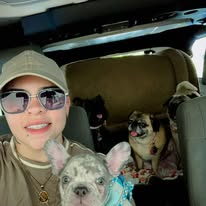

Conóceme
Mi nombre es Franci y mi amor por los perritos es la razón principal por la que nació Lovely Dog Care. Para mí, cada mascota merece sentirse segura, tranquila y querida, como si estuviera en casa.
Me apasiona trabajar con animales y cuidar cada detalle: su comodidad, su rutina, su alimentación, su higiene y, sobre todo, su bienestar emocional. Sé que para muchas familias los perritos son parte de la familia, y por eso trato a cada uno con paciencia, cariño y responsabilidad.
Además de la experiencia, cuento con estudios y certificaciones relacionadas al cuidado de mascotas, lo que me ayuda a ofrecer un servicio más seguro, consciente y profesional. Mi meta es que tanto tú como tu perrito se sientan en confianza desde el primer día.
Amor real
Cada perrito recibe atención, cariño y paciencia.
Cuidado seguro
Un ambiente calmado, limpio y pensado para su bienestar.
Preparación
Estudios, certificaciones y compromiso con un mejor servicio.